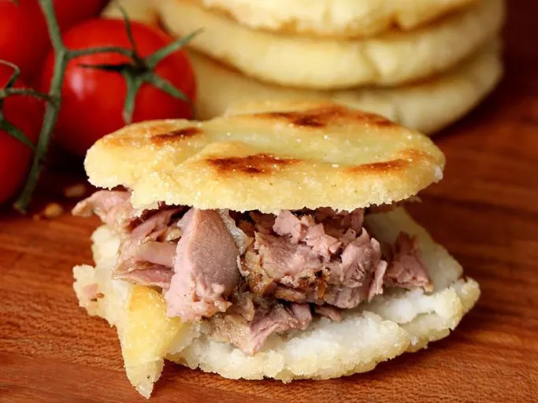

Recipe list
How to make arepas

Description
I first tasted arepas at a New York City hole-in-the-wall eatery and I fell in love with this stuffed white corn cake. Halfway through my first arepa — one stuffed with black beans, beef, plantains, and salty cheese — I vowed to learn how to make these at home. It's a truly magnificent delivery system for any number of your favorite fillings. I went with some spicy pork and avocado, but I made a version a few days later stuffed with caramelized plantains and salty goat feta.
You just need 4 ingredients.
- 2 ½ cups lukewarm water
- 1 teaspoon salt
- 2 cups pre-cooked white cornmeal (such as P.A.N.®)
- ¼ cup vegetable oil, or as needed
Steps
- Stir water and salt together in a medium bowl; gradually stir in cornmeal with your fingers until the mixture forms a soft, moist, malleable dough.
- Form dough into eight 2-inch diameter balls; pat each ball to flatten into a 3/8-inch-thick arepa patty.
- Heat oil in a large skillet over medium heat; fry arepas in batches until golden brown, about 4 to 5 minutes per side. Transfer cooked arepas to a paper towel-lined plate to drain until cool enough to handle.
- Slice halfway through each arepa horizontally with a thin serrated knife to form a pita-like pocket.